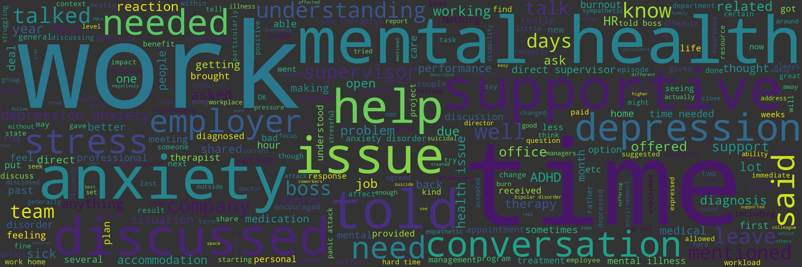

One of the main challenges of working with an unstructured dataset was the fact that many of the survey questions were open ended questions. That is, many of the questions did not fall into an easy yes/no or true/false category. Not only does this make performing any machine learning classification on these questions difficult, but this made manually cleaning the data almost impossible. Having defined a schema for the data and using a SQL database like Postgres helped make the data more structured but having to go through each of the open ended questions one by one and analyze what people wrote in their surveys is difficult and time consuming. It would take months and a lot of people to analyze all the responses. Also, manually going through this data would be largely inaccurate as these conversations could easily be interpreted differently by different people.
So, for this project, we wanted to figure out a way to help better automate the processing of these open ended questions by diving deeper into natural language processing and some of the different text analysis tools available for classifying text. Also, being that OSMI is a small non-profit with limited resources, automating some of the open responses that came back from the survey could potentialy help them discover insights into the data quicker from a large, unstructured dataset and not have to rely on manually going through each response one by one.
As a proof of concept, we looked at analyzing the answers for the following survey question:
Specifically, for this question, we wanted to see if we could come up with a simple text classification model that could accurately classify conversations employees had about mental health with their employer as either positive or negative. The ultimate goal of this exercise is to identify and extract the opinions from the survey responses to better understand the attitudes and emotions employees have towards mental health in the workplace and be able to classify those attidues and emotions as either positive or negative.
To try to understand the meaning, context, and intent of what employees think about mental health in the workplace and to efficiently come up with some insights for improving mental health conversations in the workplace, we looked at a couple of different sentiment analysis tools that would allow us to somewhat automate the work of analyzing the polarity of the conversations and help us identify and classify the text as either positive or negative.
Use the form below to test out how these sentiment analysis tools work and how they calculate scores to classify text as positive or negtative
{{ comments | safe }}
{% endif %}| Sentiment Metric | Score |
|---|---|
| Positive | {{ vader_score.pos | safe }} |
| Negative | {{ vader_score.neg | safe }} |
| Neutral | {{ vader_score.neu }} |
| Compound | {{ vader_score.compound }} |
| Polarity |
|---|
| {{ textblob_score | safe }} |
Represents the proportion of text that is positive, negative, or neutral (should all add up to 1).
Positive sentiment: compound score greater than or equal to 0.05.
Neutral sentment: compound score greater than -0.05 and less than 0.05.
Negative Sentiment: compound score greater less than or equal to -0.05.
For more information about how a sentence is scored to classify it as either positive, negative, or neutral, go here.
Polarity lies in the range of -1 and 1. 1 means a positive statement. -1 means a negative statement.
For more information about how a sentence is scored to classify it as either positive, negative, or neutral, go here.
The following charts compare how the different sentiment analysis tools classified the various write-in responses from the OSMI Mental Health in Tech Survey regarding conversations employees had with their employers. As you can see, both tools came up with pretty similar results. Although, TextBlob classified more responses as negative than did VADER.
After performing a sentiment analysis on the data, we looked at trying to build a few different text classification models that could predict whether or not a conversation about mental health was positive or negative.
To try to classify the conversations from the survey, we looked at and compared the following classification models.
The first model we tried to fit our training data to was Naive Bayes. To build this model, we again used TextBlob, which provides built-in classifiers to create a custom classifier. One of those built-in classifiers is Naive Bayes. Naive Bayes is an example of a generative classifier, which is a classifier that builds a model of how a class could generate some input data. This type of classifier gives us the class most likely to have generated a particular observation.
Text: {{ nb_classifier_text | safe }}
| Classification |
|---|
| {{ classification | safe }} |
| Model Accuracy |
|---|
| {{ nb_classifier_accuracy | safe }} |
| Most Informative Features |
|---|
Most Informative Features
contains(supportive) = True pos : neg = 9.9 : 1.0
contains(sick) = True neg : pos = 8.3 : 1.0
contains(suffer) = True neg : pos = 5.8 : 1.0
contains(brought) = True neg : pos = 5.8 : 1.0
contains(an) = True pos : neg = 4.7 : 1.0
contains(later) = True neg : pos = 4.5 : 1.0
contains(thought) = True neg : pos = 4.5 : 1.0
contains(which) = True neg : pos = 4.5 : 1.0
contains(No) = True neg : pos = 4.5 : 1.0
contains(took) = True neg : pos = 4.2 : 1.0
|
A word cloud is a good way to see the visual representation of text data. It displays a list of words where the importance of each is shown with font size and color. The following word cloud was genereted using the Python wordcloud library by Andreas Mueller. This word cloud visually highlights the most common words used to describe the mental health conversations employees said they had with their employers. The large the text size, the more such words were used. From this word cloud, we can quickly see the positive, negative, and neutral sentiments.
Here are a few sample comments from the dataset and what sentiment the libraries predicted:
| Conversation | VADER | TextBlob |
|---|